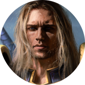
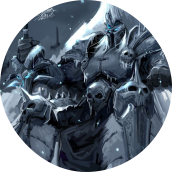
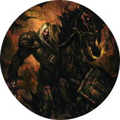

Arthas Menethil
Arthas Menethil, Príncipe heredero de Lordaeron y Caballero de la Mano de Plata, era hijo del Rey Terenas Menethil II y heredero del trono. Fue entrenado como un paladín por Uther el Iluminado, y tenía una relación romántica con la hechicera Jaina Valiente.
arthas menetil como el rey exánime
Inicialmente fue encerrado dentro del Trono Helado. Desde ahí creó la Plaga y, valga la redundancia, La Plaga que tenía la misión de preparar la llegada de la Legión Ardiente en la Tercera Guerra. Se fusionó con el príncipe Arthas, a quien absorbió tras ser liberado de su prisión helada. Tras la destrucción de Agonía de Escarcha y la muerte de Arthas, Bolvar Fordragón ocupó el puesto de jefe del ejército de no-muertos, quedando prisionero en el Trono Helado una vez más.
invencible
Invencible es el corcel de Arthas que le fue regalado apenas tuvo la edad suficiente para montarlo, quién fue cayó en una batalla cuando perdió sus piernas traseras, y fue enterrado en el cementerio de los Balnir. Años más tarde y después de la caída de Lordaeron, Arthas ahora un Caballero de la Muerte, asesino a su padre al regreso a Lordaeron, luego fue al establo de los Balnir donde Invencible estaba enterrado. Con el nigromántico poder de Frostmourne, Arthas resucitó a su gran corcel como un destrero no-muerto.